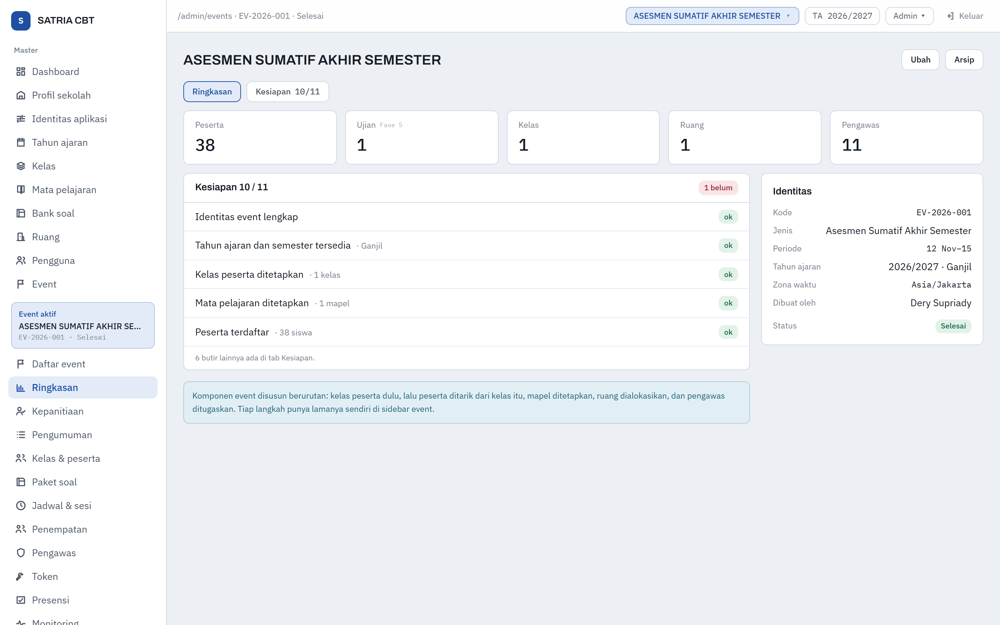

7. Membuat event
Satu kegiatan ujian. Aplikasi menjaga sebelas syarat sebelum event boleh dibuka — dan itulah bagian yang paling sering mengejutkan.
Daftar event

Hanya ada satu event di sekolah contoh ini. Di sekolah yang sudah beberapa semester berjalan, daftarnya memanjang, dan penyaring status di atas tabel menjadi penting.
Membuat event baru

-
Isi nama event. Pakai nama yang dikenali guru dan siswa — nama inilah yang tercetak di berita acara dan laporan hasil.
-
Pilih jenis, periode, dan pastikan tahun ajaran serta semester terisi.
-
Sesuaikan ambang pelanggaran bila perlu. Nilainya disalin dari Pengaturan sekolah saat event dibuat, lalu berdiri sendiri — mengubah Pengaturan kelak tidak mengubah event ini.
-
Tekan Simpan draft. Event lahir berstatus Draft, dan belum bisa dibuka.
Ringkasan dan sebelas langkah kesiapan

Setelah event dibuat, sidebar bertambah satu lapis: menu milik event itu. Ringkasan adalah halamannya, dan di situ ada daftar kesiapan.

Sebelas butir itu, berurutan:
- Identitas event lengkap — nama, jenis, periode.
- Tahun ajaran dan semester tersedia.
- Kelas peserta ditetapkan — kelas mana yang ikut.
- Mata pelajaran ditetapkan — mapel apa saja yang diujikan.
- Peserta terdaftar — siswa yang benar-benar ikut.
- Jadwal ujian tersedia — ada sesi, dan sesinya punya ruang.
- Paket soal ditetapkan — setiap mapel punya paketnya.
- Ruang teralokasi.
- Pengawas ditugaskan.
- Token tersedia.
- Kapasitas ruang mencukupi — jumlah kursi tidak kurang dari jumlah peserta.
Status event dan perjalanannya
Event bergerak satu arah, dengan satu pengecualian:
Draft → Persiapan → Siap → Berjalan → Selesai → Arsip
- Draft — baru dibuat.
- Persiapan — sedang dilengkapi.
- Siap — gerbang kesiapan lulus. Hanya dari sini event bisa dibuka.
- Berjalan — ada sesi yang sedang dikerjakan siswa.
- Selesai — seluruh sesi tuntas. Aplikasi memindahkannya sendiri, bukan Anda.
- Arsip — disimpan, tidak lagi aktif.
Dibatalkan adalah satu-satunya status final: dari sana tidak ada jalan kembali. Hati-hati menekannya.
Membuka kembali event yang diarsipkan
Mengarsipkan bukan menghapus, dan bisa dibatalkan. Dari event yang berstatus Arsip, tombol pemulihan tersedia dan tujuannya bisa Anda pilih — Draft, Persiapan, Siap, Berjalan, atau Selesai — bukan dikunci ke satu tujuan.
Menghapus event
Event hanya bisa dihapus bila statusnya Draft dan belum punya ujian. Tombolnya tetap terlihat pada event lain, dan penolakannya berupa kalimat yang menjelaskan apa yang harus dilakukan — bukan tombol yang hilang tanpa keterangan.